⚡ ELNS - PRVÁ PRIEBEŽNÁ PÍSOMKA ⚡
1. MERANIE ODPORU A DELIČ NAPÄTIA
Schéma zapojenia deliča napätia
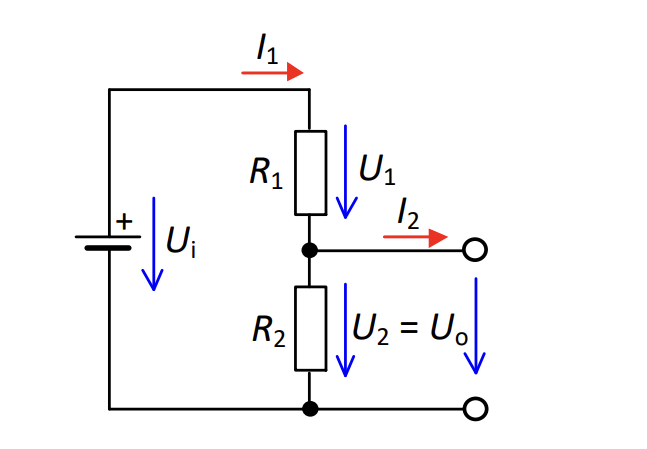
Vzťahy pre výpočet
Prúd obvodom:
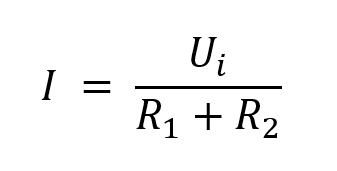
Výstupné napätie:
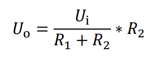
Vstupné napätie:
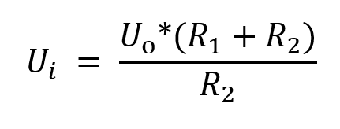
2. PASÍVNE PRVKY A FREKVENČNÉ FILTRE
🔽 DP FILTER (Dolnopriepustný)
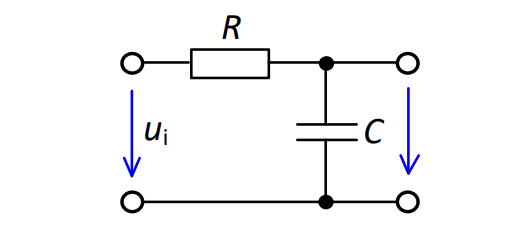
Pri medznej frekvencii fc:
- Pokles amplitúdy: -3 dB (0.707×)
- Fázový posun: -45°
Pri f ≪ fc: Signál prechádza (amplitúda ≈ 1, fáza ≈ 0°)
Pri f ≫ fc: Signál je utlmený (amplitúda → 0, fáza → -90°)
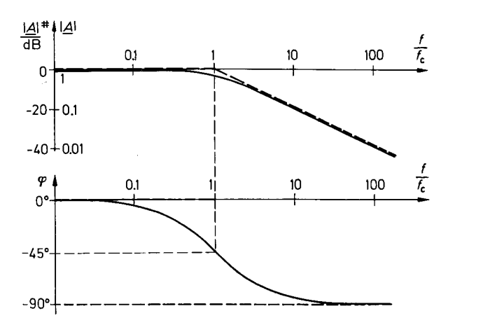
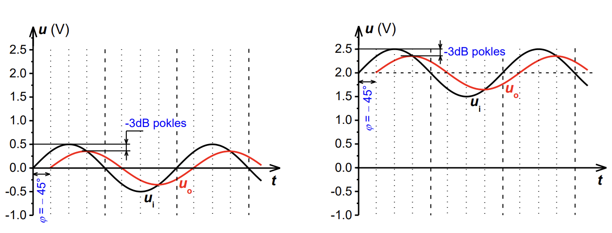
🔼 HP FILTER (Hornopriepustný)
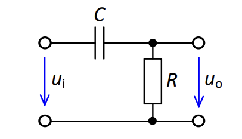
Pri medznej frekvencii fc:
- Pokles amplitúdy: -3 dB (0.707×)
- Fázový posun: +45°
Pri f ≪ fc: Signál je utlmený (amplitúda → 0, fáza → +90°)
Pri f ≫ fc: Signál prechádza (amplitúda ≈ 1, fáza ≈ 0°)
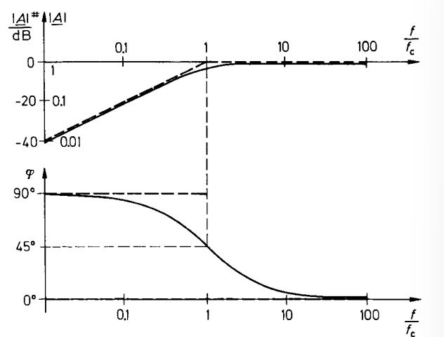
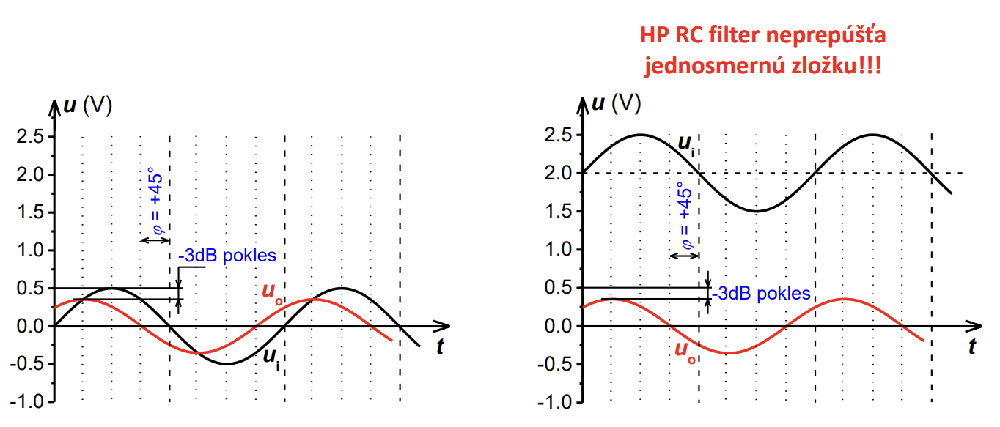
Vzťahy pre oba filtre
Medzná frekvencia:
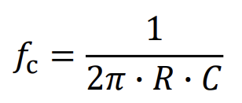
Časová konštanta:
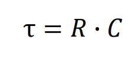
3. USMERŇOVACIE DIÓDY
Typy diód a prahové napätia
- pn-dióda (Si): Uprah ≈ 0.7 V
- Schottkyho dióda: Uprah ≈ 0.3 V
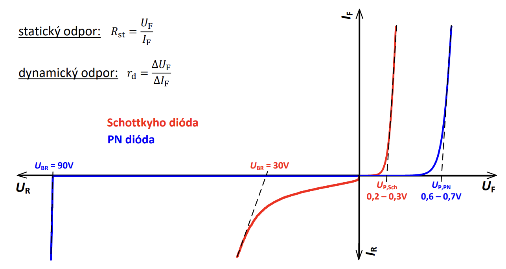
Označenie osí: x = U [V], y = I [A]
Vzťahy pre odpory (priepustný smer)
Statický odpor:
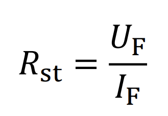
Dynamický odpor:
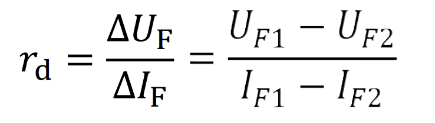
Jednocestný usmerňovač - bez kondenzátora
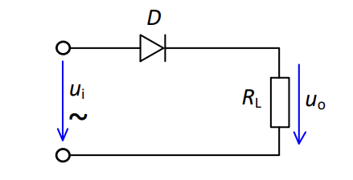
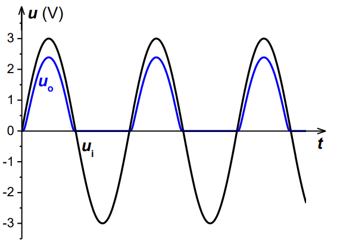
Označenie osí: x = t [s], y = U [V]
Jednocestný usmerňovač - s kondenzátorom
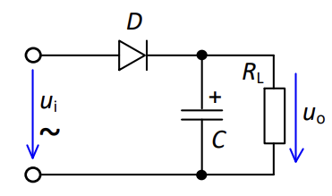
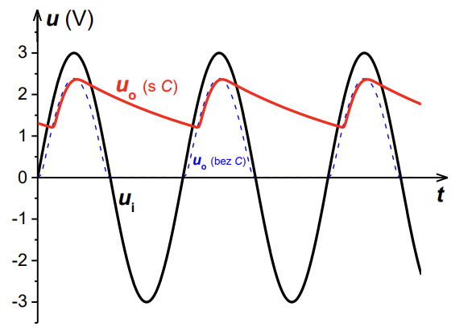
Označenie osí: x = t [s], y = U [V]
4. STABILIZAČNÉ DIÓDY (Zenerove)
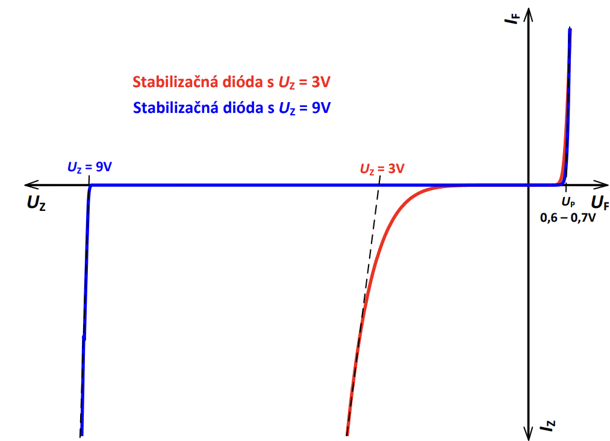
Označenie osí: x = U [V], y = I [A]
Mechanizmy napäťového prierazu
- UZ < 5 V: Zenerov jav (tunelový efekt)
- 5 V < UZ < 7 V: Kombinácia oboch javov
- UZ > 7 V: Lavínový prieriaz
Vzťahy pre odpory (záverný smer)
Statický odpor:
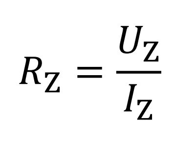
Dynamický odpor:
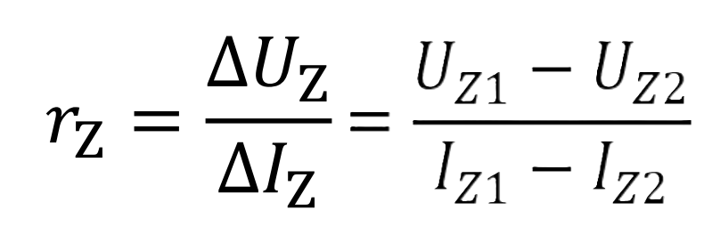
Stabilizátor napätia so Zenerovou diódou
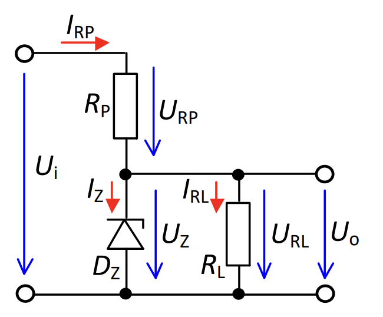
Vzťahy pre výpočet obvodových veličín
Predradný odpor:
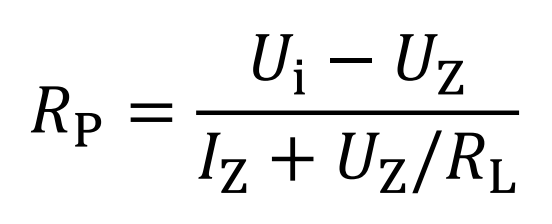
Prúd záťažou:
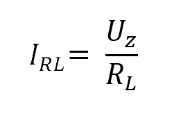
Prúd predradným odporom:
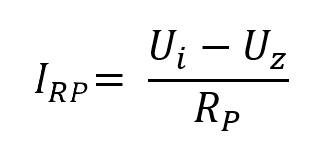
Prúd diódou:
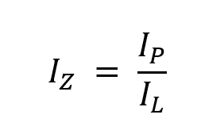
Vstupné napätie:
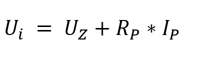
Výstupné napätie:
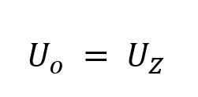
⚡ PRAKTICKÉ TIPY NA PÍSOMKU ⚡
Pamätať si základné hodnoty:
- pn-dióda: 0.7 V
- Schottkyho: 0.3 V
- -3 dB = 0.707× amplitúdy
- Fázové posuny: ±45° pri fc
Pri kreslení grafov:
- Vždy označiť osi (x, y) s jednotkami!
- Vyznačiť kľúčové body (Uprah, UZ, fc)
- Ukázať správny tvar kriviek
- Pre VA charakteristiky: priepustný aj záverný smer
Pri výpočtoch:
- Začať od základných vzťahov
- Vyjadriť všetky obvodové veličiny
- Kontrolovať jednotky
- Použiť Kirchhoffove zákony
Časové priebehy:
- Označiť osi (t, U alebo I)
- Ukázať správnu fázu a amplitúdu
- Vyznačiť vzťah vstup vs. výstup
⚠️ DÔLEŽITÉ: Pri stabilizačnej dióde pracujeme v závernom smere!